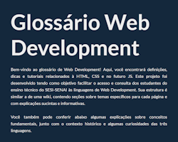

nenhuma atividade...
Página Receita (Bolo de Cenoura)
Este trabalho foi desenvolvido ao longo de uma série de aulas em que estudávamos conceitos de HTML e CSS e os aplicávamos na prática na criação de um site. Escolhi como tema a receita de um bolo de cenoura e, além de praticar HTML e CSS, procurei também me dedicar à estética e ao design do site, como forma de exercício. A atividade me ajudou a revisitar alguns conceitos dessas linguagens e a incorporar boas práticas de desenvolvimento web.
Habilidades: H15, H16, H17

Glossário Técnico de Web Development
Após a realização do projeto do site de receita, dedicamos as semanas seguintes à construção de um glossário técnico de web development, voltado a facilitar o acesso e a consulta dos estudantes do ensino técnico do SESI-SENAI. O glossário, estruturado de forma semelhante a uma wiki, incluiu explicações sucintas e informativas sobre cada tema, abrangendo mais de 25 tags de HTML e 15 propriedades de CSS. O projeto me auxiliou a aprimorar minhas habilidades em HTML e CSS, motivou-me a reformular meu portfólio e ainda resultou na criação de um repositório com README e na publicação do site com o auxílio do Netlify. Pretendo realizar futuras alterações visando melhorias de quality of life (QoL) e adicionar uma aba dedicada a JavaScript, incluindo mini-projetos demonstrativos.
Habilidades: H5, H6, H7, H8.
?o que voce ta fazendo aqui ainda estamos no segundo trimestre